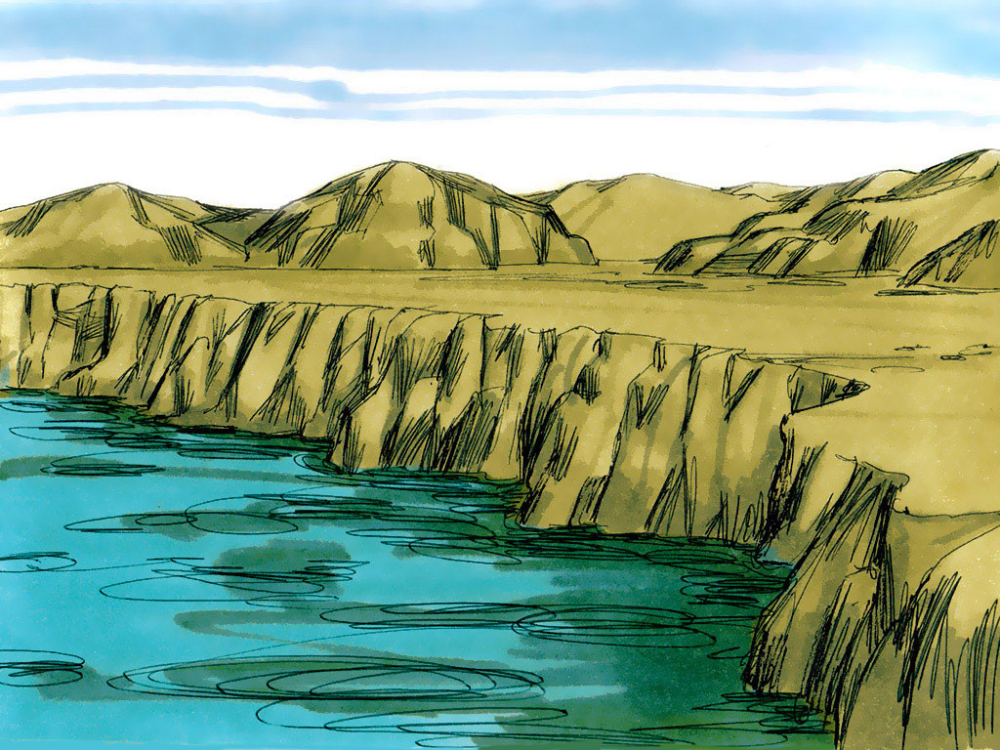
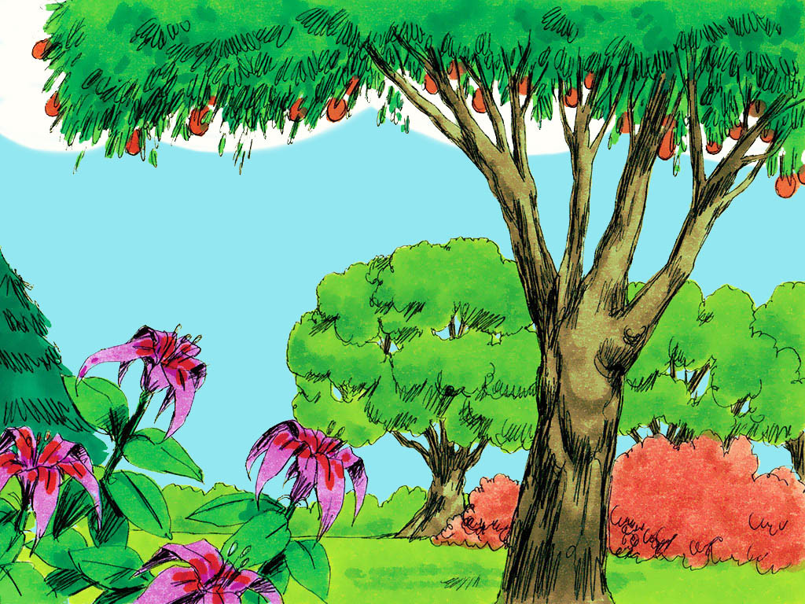
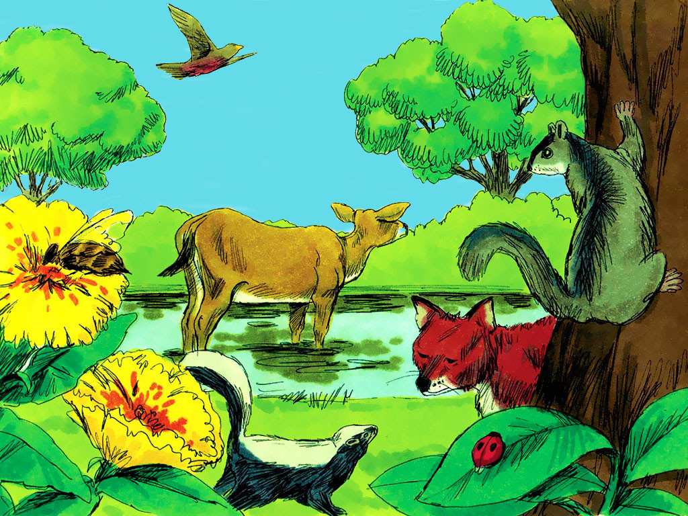
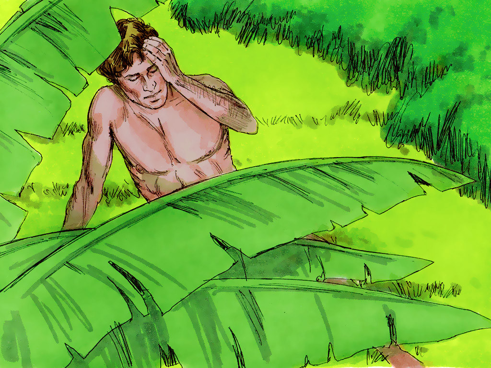
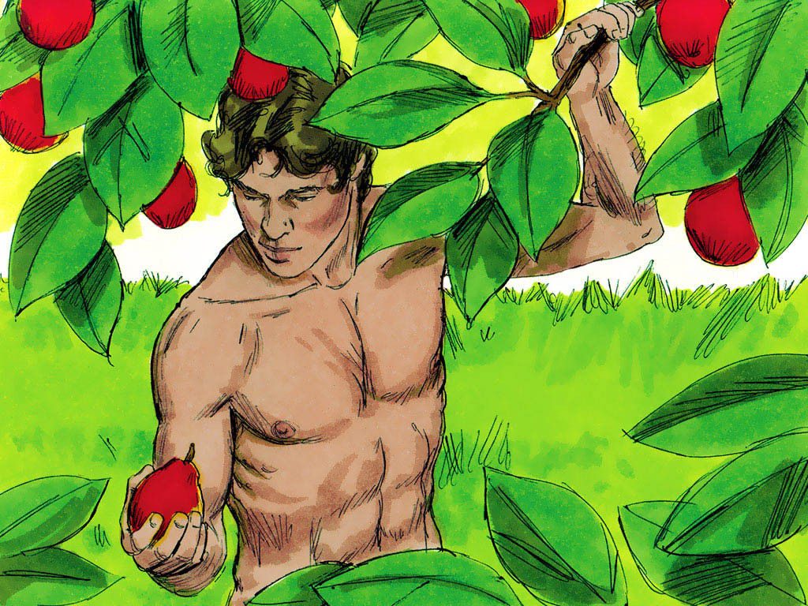
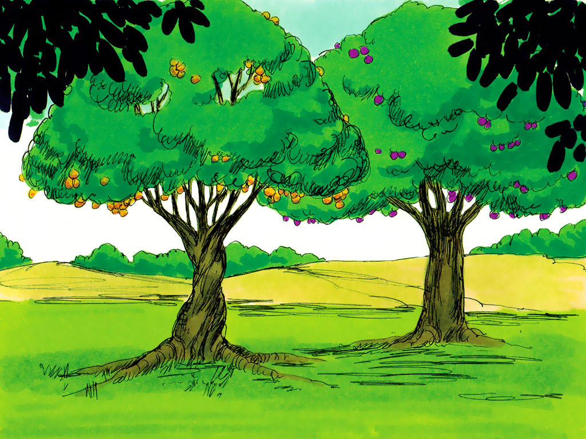
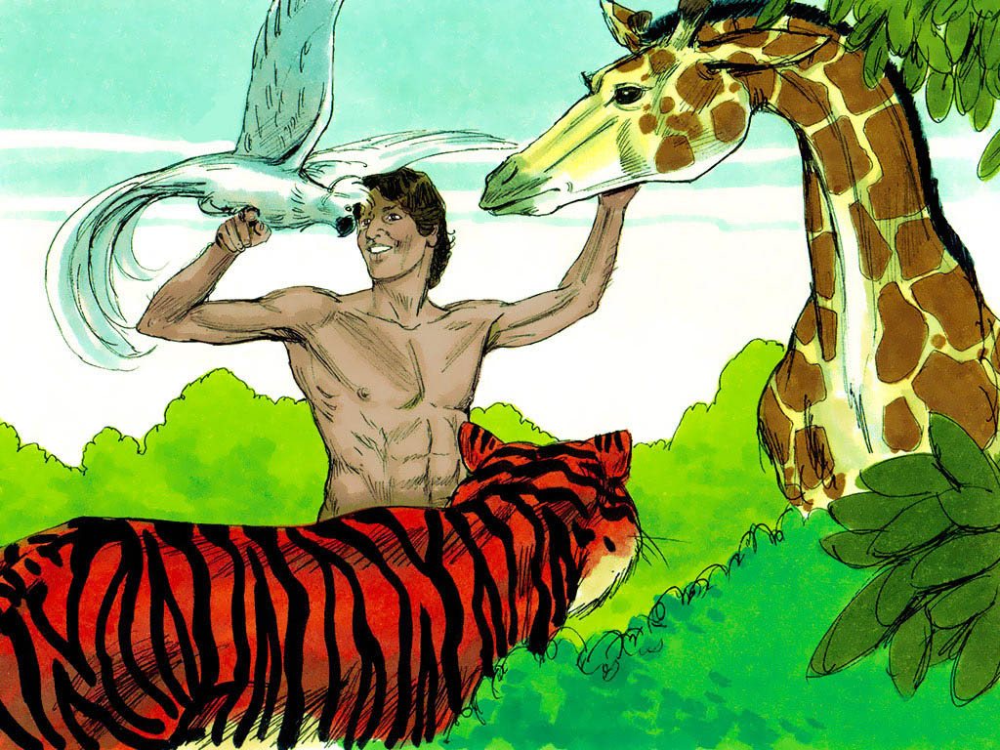
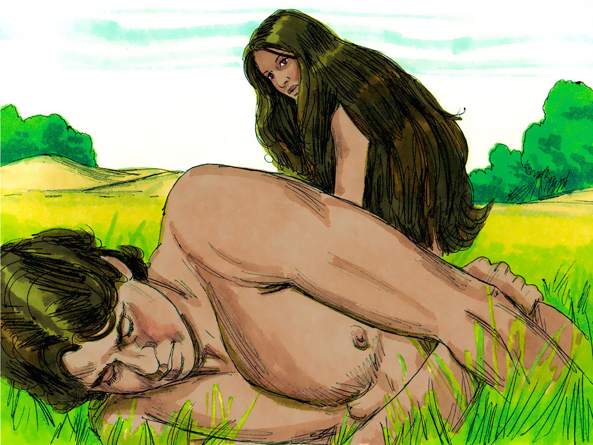
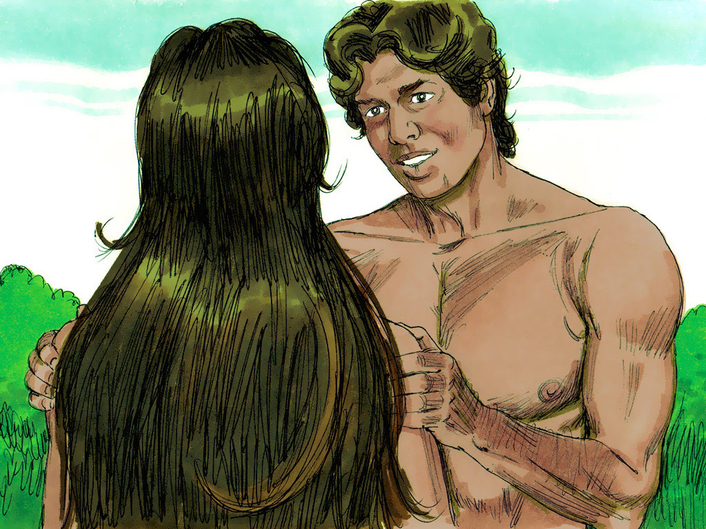
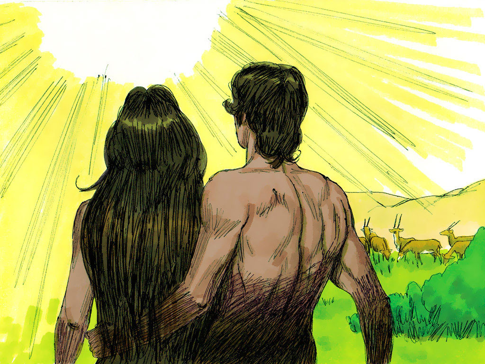

DAY 3

On the third day God ordered dry land to appear and the waters were
gathered into seas.
Then God said, ‘Let the earth burst out with every sort of grass and
seed-bearing plant, and fruit trees with seeds inside the fruit.
Everything God said took place. All kinds of grass, plants and trees grew
with their own seeds to grow more.
God saw all the plants growing and declared it was good.

DAY 6

On the sixth day of creation, God said, ‘Let the land have many species of
living creatures.
God created cattle and reptiles and wildlife of every kind.
God created all kinds of species of wild animals and cattle and reptiles.
He was pleased with His creation.
Then God said, ‘Let us make man in our image to be the master of all life
upon the earth, skies and the seas.’ God formed a man from the dust of the
ground and breathed life into his nostrils. The man became a living being.


God named him Adam and put him in a garden he had planted in Eden. Adam
worked and looked after the garden.
Adam could eat of any of the fruit growing in the garden.
However, in the middle of the garden were two special trees. One was
called the Tree of Life, the other was the tree giving knowledge of good
and evil. God told Adam ‘You can eat the fruit of any tree except the tree
giving knowledge of good and evil. To disobey and eat this fruit will
result in death


God brought the animals to Adam so he could name them.
Adam gave names to all the animals.
Then the Lord said, ‘It is not good for the man to be alone. I will make
a helper for him.
God caused Adam to fall into a deep sleep; and while he was sleeping,
He took one of the man’s ribs from it and made a woman.


God brought the woman to Adam. Adam said, ‘She is part of my own bone and
flesh! Her name is ‘woman’ because she was taken out of a man.’ This
explains why a man leaves his father and mother and is joined to his wife
in such a way that the two become one.
Now although the man and his wife were both naked, neither of them was
embarrassed or ashamed.
